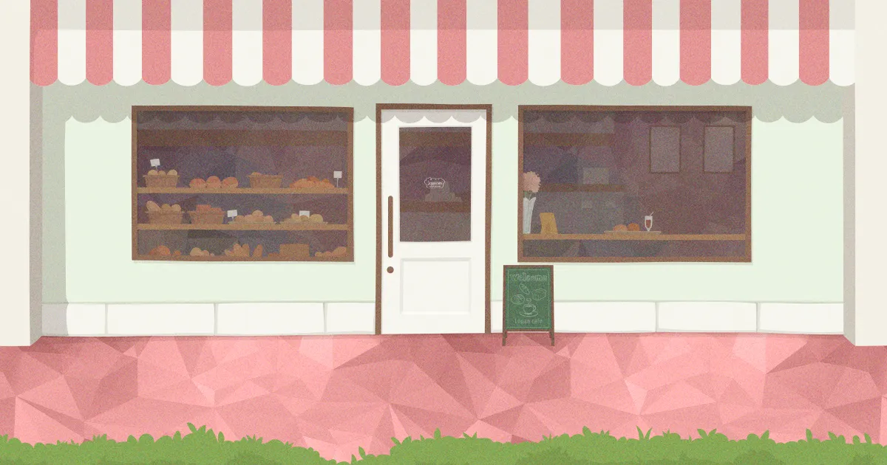
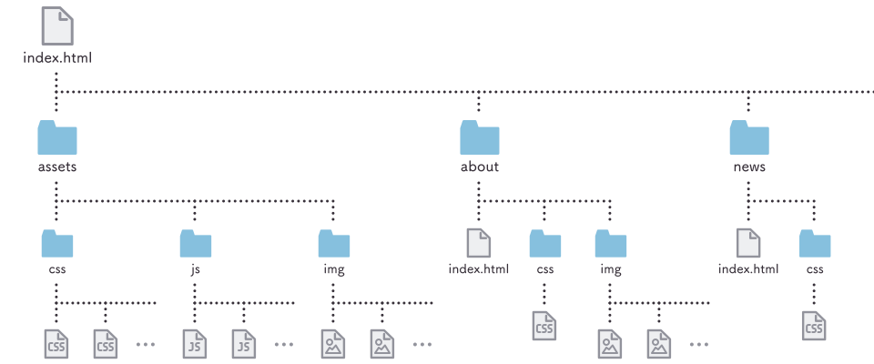
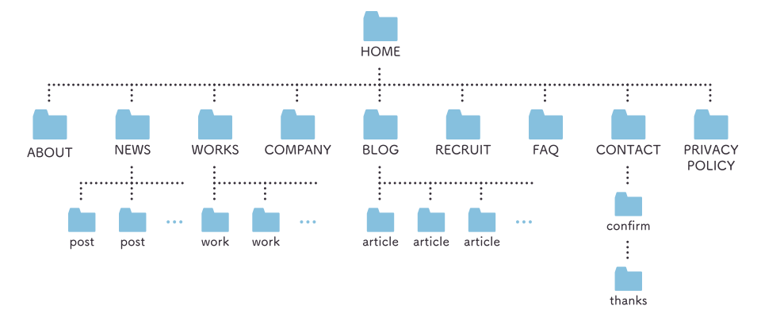

About

Lopan café 概要
「Lopan café」は、Lopan.jpがよく使うパターンを集めた、レイアウトとパーツ、UI、エフェクト、コンポーネントのフレームワーク・スタイルガイド。
- CSSファイルで管理
- 全ページで読み込むベースCSSファイルと、ページごとに読み込む専用CSSファイルで構成。
サイトに登場する大きなレイアウトパターンと、パーツ要素、UI感を網羅したコンポーネントを、専用CSSファイルで調整する段取り。
- 命名規則と構造
- レイアウト、コンポーネント、ユーティリティなどのクラスは、スタイリングの目的ごとに接頭辞を付ける命名規則。
- 書式ルール
- SassやSCSSを使わずCSSで丁寧に書く。
- 中規模サイト向け
- 制作中のWebサイトの全貌を把握していないといけないため、あまり複雑なサイトだと人間には難しい。ページテンプレートが10個くらいの中規模サイト向けフレームワーク。
CSSファイルで管理

- common.css
- CSSリセットや、Webサイト内のすべてのページに共通してある要素（ヘッダー、フッター、ナビゲーションなど）のスタイルを書く。
assets/css/common.css
- component.css
- コンポーネント（使い回しの利くWebパーツ）のスタイルを書く。
assets/css/component.css
- style.css（個ページ専用のCSS）
- そのページでだけ読み込むCSSファイル。コンポーネント間のスペーシングなど、コンテンツに応じたスタイルを適宜指定する。下層ページはindex.htmlと同じ階層のcssフォルダ内に設置。
- 例えば
assets/css/home.css。トップページは特に下層ページにはないレイアウトが頻出する。
- 例えば
contact/css/style.css。フォームなんて大体このページにしかない。
CSSリセット（Foundation）
common.cssの冒頭に以下CSSを記述。「A modern CSS reset」を参考に少し調整したもの。
*,*::before,*::after{box-sizing:border-box;}
body,h1,h2,h3,h4,p,figure,blockquote,dl,dd{margin:0;}
ul,ol{list-style:none;padding:0;}
a{color:inherit;text-decoration:inherit;text-decoration-skip-ink:auto;}
img,picture,video,iframe{display:block;max-width:100%;}
img,svg,video,iframe{vertical-align:middle;}
img[height],video[height]{height:auto;}
input,button,textarea,select{font:inherit;}
button{border:0;padding:0;background:none;}
sub{vertical-align:baseline;}
@media(prefers-reduced-motion:reduce){*,*::before,*::after{animation-duration:.01ms !important;animation-iteration-count:1 !important;transition-duration:.01ms !important;scroll-behavior:auto !important;}}
その下に、ベースとなるスタイルを記述。
html {
scroll-behavior: smooth;
-webkit-text-size-adjust: 100%;
}
html.is-behaviorAuto {
scroll-behavior: auto;
}
body {
overscroll-behavior: auto;
color: #373039;
font-size: 1em;
line-height: 2;
font-family: "Roboto", "Noto Sans JP", sans-serif;
font-weight: 400;
letter-spacing: .06em;
font-feature-settings: "palt";
-webkit-font-smoothing: antialiased;
-moz-osx-font-smoothing: grayscale;
text-rendering: optimizeLegibility;
}
body.is-fixed {
position: fixed;
width: 100%;
}
@media screen and (max-width: 479px) {
body { font-size: .875em; }
}
命名規則と構造
大きく、レイアウト、セクション、コンポーネントに分け、定型、専用と、特性、状態が付随する。
別途、ページ識別と、ユーティリティがある。
レイアウト
「レイアウト」は接頭辞にl-を使う（Layoutのl）。主にbody要素直下にある要素で、z-indexを管理する要素。widthやmargin、padding、positionなど、レイアウトに関わるスタイルを指定する。
.l-header { z-index: 4; }
.l-menu { z-index: 3; }
.l-main { z-index: 1; }
.l-footer { z-index: 2; }
.l-modal { z-index: 5; }
.l-section {}
セクション
「セクション」は接頭辞にp-を使う（Particularのp）。.l-sectionに付随することが多い。
.p-keyvisual {}
.p-products {}
.p-concept {}
.p-article {}
.p-aside {}
︙
コンポーネント
「コンポーネント」は接頭辞にc-（Componentのc）および、js-（JavaScriptのjs）を使う。ボタンなどのパーツや、レイアウトパターン、UI一式を包括するクラス。JavaScriptを伴うコンポーネントも含み、JavaScriptからもこのクラス名で拾う。
CSSでレイアウトして、状態の変化をJavaScriptで切り替えるくらいのコンポーネントはc-を接頭辞とする。
JavaScriptで実装して、CSSで見た目を整えるくらいのコンポーネントはjs-を接頭辞とする。
.c-button {}
.c-archivelist {}
.c-video {}
.js-accordion {}
.js-carousel {}
︙
定型
「定型」はレイアウトやコンポーネントの中身を構成する要素。text、image、linkなど接頭辞を付けず、そのレイアウト、コンポーネント配下でしか使わない、予約語として扱うそのままの英単語。
- テキスト関連
.text（.title.lead.excerpt.summary.note.date.price.author）- 画像関連
.image（.photo.illust.figure.caption）- その他
.logo.container.overlay.menu.link.address.copyright.item.ico.arr.deco.req
.l-header .logo {}
.l-footer .copyright {}
.c-archivelist .text {}
.c-numlist .item {}
.js-modal .overlay {}
︙
専用
「専用」はコンポーネントを構成するパーツ要素。そのコンポーネント内でしか使わないクラス。
.c-accordion .acc_head {}
.c-accordion .acc_body {}
.js-carousel .carousel_container {}
.js-carousel .carousel_reel {}
.c-faq .faq_q {}
︙
特性
「特性」はコンポーネントに付随する-で始まる文字数少なめのクラス。コンポーネントに:where()を使って付与する。
コンポーネントのタイプやバージョン、意図を示したり、パーツの種類や位置、機能などを示す。
.c-button:where(.-l) {}
.c-button:where(.-s) {}
.c-title:where(.-bar) {}
.c-archivelist:where(.-bar) {}
.c-linklist:where(.-sns) {}
︙
状態
「状態」は接頭辞にis-を使う。JavaScriptを介して付与されるクラス。表示／非表示、アニメーション中、再生／停止など、コンポーネントの状態を表す。
body.is-fixed {}
.l-menu.is-anim {}
.l-menu.is-active {}
.c-video.is-playing {}
.js-inview.is-inview {}
︙
ページ識別
「ページ識別」は接頭辞にpage-を使う。各ページの.l-main（はたまたbody要素）に、そのページの識別子として付けるクラス。
.page-home .c-button {}
.page-reqruit .p-visual {}
︙
ユーティリティ
「ユーティリティ」は接頭辞にu-を使う（Utilityのu）。「個ページ専用のCSS」に書くのも億劫なスタイルを手短に適用したい時のための便利クラス。デバイス間の差異（レスポンシブ）を考慮しないため、マージンなどスペーシングには使い所に配慮が必要。
.u-u-visuallyhidden {}
.u-alignc {}
.u-mt0 { margin-top: 0 !important; }
.u-mt1 { margin-top: 8px !important; }
.u-mt2 { margin-top: 16px !important; }
︙
レスポンシブ
すべてのデバイスで同じスタイルを使えるのが理想だが、同じ印象になるよう調整するために、メディアクエリ、コンテナクエリは必要。
色や見た目は共通スタイルとして書き、モバイルデバイス、デスクトップごとのスタイルは個別にメディアクエリ内に書く。スタイルを更新する上書きは良いが、取り消す上書きはしない。メディアクエリのブレイクポイントは以下がしっくりくる。
/* desktop/mobile 共通の style */
.l-main {
--sideGap: 48px;
padding-inline: var(--sideGap);
}
@media print, (min-width: 480px) {
/* mobile には適用したくない style */
}
@media print, (min-width: 768px) {
/* desktop だけの style */
}
@media screen and (max-width: 767px) {
/* desktop には適用したくない style (3 段組みが 2 段組みになるところ) */
.l-main { --sideGap: 32px; }
}
@media screen and (max-width: 479px) {
/* mobile だけの style (2 段組みが 1 段組みになったり、フォントサイズはここで変わることが多い) */
.l-main { --sideGap: 24px; }
}
@media screen and (max-width: 359px) {
/* small mobile style */
.l-main { --sideGap: 16px; }
}
取り消す上書きとは
例えば「通常時は少し小さめに表示しておいて、ホバーすると元の大きさに戻る」ようなスタイルを指定する場合。
通常時のスタイルと、ホバーした時のスタイルを指定すると、ホバー時に通常時のスタイルを取り消すことになる。
@media (hover: hover) {
.c-badge {
transform: scale(.9);
}
.c-badge:hover {
transform: none;
}
}
ホバーしていない時は小さめに表示するという指定にして、スタイルの取り消しを回避する。
@media (hover: hover) {
.c-badge:not(:hover) {
transform: scale(.9);
}
}
書式ルール
コンポーネントごとにひとかたまりになるよう、関連スタイルは行を詰めて記述し、コンポーネント名を複数行コメントで記述。
「別バージョン」はコンポーネント名の配下に1行空けて、バージョン名をコロン6つで飾ったコメントで記述。
コンポーネント間は2行空ける。
@charset "utf-8";
/**
* コンポーネント名
* ---------------------------------------- */
.c-component {}
.c-component .comp_element {}
/* :::::: 派生・バージョン名 :::::: */
.c-component:where(.-version) .comp_element {}
/**
* コンポーネント名
* ---------------------------------------- */
.c-component2 {}
︙
セレクタの後に半角スペースを空けて開き波括弧（{）の後で改行。
波括弧内はタブでインデント。プロパティの後にコロン（:）、半角スペースを空けて値を記述し、行末にセミコロン（;）を付けて改行。
スタイル終わりの行は閉じ波括弧（}）のみ。
.c-component {
display: grid;
︙
}
指定するスタイルがひとつだけの場合には、セレクタ、プロパティ、値を改行せず1行で記述してもよい。※あくまで読み易さを意識する。
.carousel_arrow {
--arrowPosition: -24px;
cursor: pointer;
position: absolute;
︙
}
.carousel_arrow:where(.-prev) { left: var(--arrowPosition); }
.carousel_arrow:where(.-next) { right: var(--arrowPosition); }
中規模サイト向け
下表くらいの規模のサイト向け。
